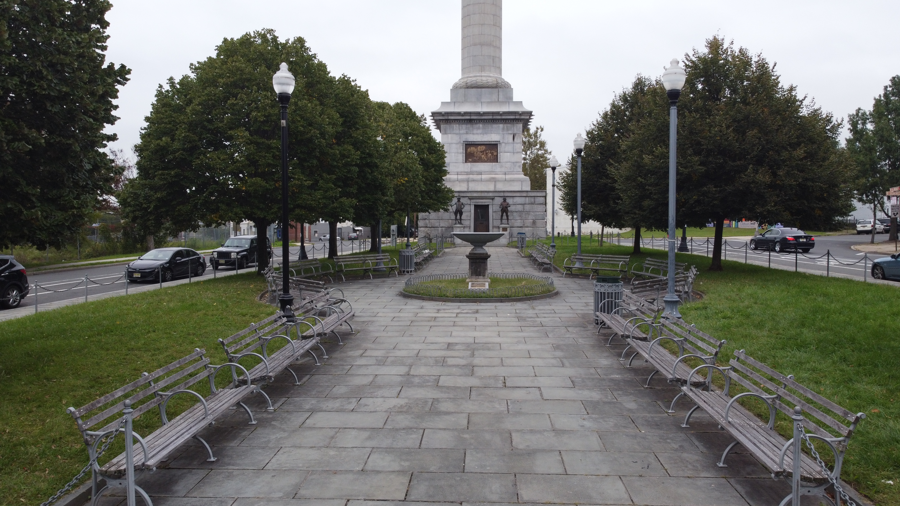
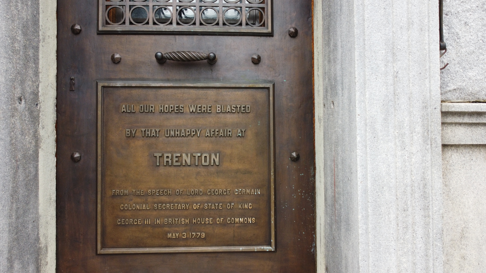
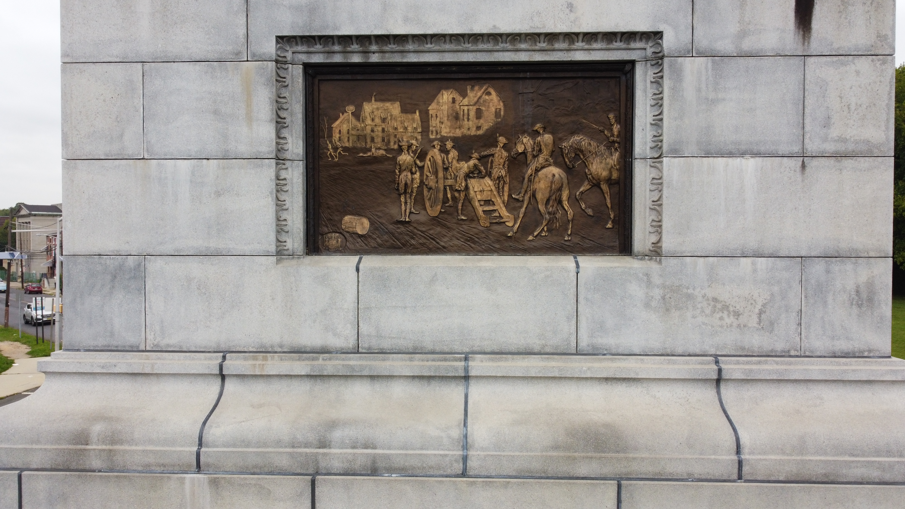

10 Fun Facts About the Trenton Battle Monument

Learn about the history, people, and events connected to the Trenton Battle Monument.
1. Who designed the monument?
John H. Duncan
2. Who officially erected the battle monument?
The Trenton Battle Monument Association
3. What does the monument commemorate?
The American Army defeated the forces of Great Britain in the Battle of Trenton.
4. What day did this victory occur?
December 26, 1776.
5. How tall is the monument?
130 Feet

6. Which american general stands at the very top of the monument?
George Washington
7. How tall is the statue of George Washington?
13 feet
8. Who sculpted the statue of George Washington?
William Rudolf O' Donovan
9. Which artillery captain and future founding father is Washington commanding to direct the cannons?
Alexander Hamilton
10. Other than the Britain forces what other forces did the American Army had to faced?
Hessian-German Mercenary Soldiers
